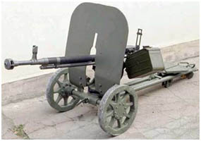
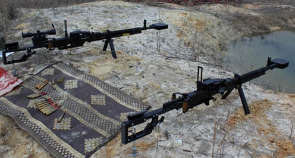
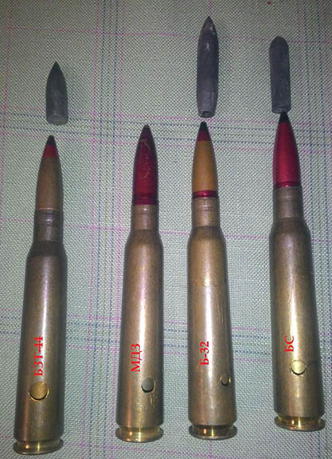
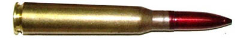
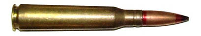
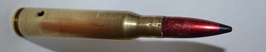

ВОГНЕВА ПІДГОТОВКА - ДШКМ
Призначення і бойові властивості кулеметів ДШКМ. Боєприпаси.
Призначення і загальні відомості
12,7-мм кулемет зр. 1938/46 р. Дегтярева – Шпагина крупнокаліберний (ДШКМ) – є потужною автоматичною зброєю і призначений для стрільби по повітряних цілях і для боротьби з вогневими точками противника і його живою силою, прикритою легкою бронзою.
Стрільба з кулемета ведеться короткими (5 - 10 пострілів), довгими (15-20 пострілів) чергами і безупинно.
Подача патронів у приймач при стрільбі здійснюється з металевої патронної стрічки, покладеної в коробку ємкістю 50 патронів. Бойова скорострільність кулемета до 80 пострілів за хвилину
Якщо в ваш підрозділ підігнали облегшені станіни, то дуже ефективним виявилось вставляти залізні пластини перед ножками цієї станіни. По краній мірі конструкція тих, що були в нашому підрозділітаке дозволяла. І в результаті значно зменшувалась віддача. Приміняли це як на "Дашках" так і на "Утес". Кожна така пластина важила напевне не менше 5 кг. Таких ми виставляли по 2-3 шт.
ТТХ
| Технічна характеристика | Показник |
|---|---|
| Дальність дійсного вогню з кулемета по вогневим точкам | 1500м |
| по цілях, які прикриті легкою бронзою (до 10 мм) | 800м |
| по літаках противника | 1600 м |
| Прицільна дальність стрільби по наземних цілях | 3500 м |
| Максимальна дальність польоту кулі близько | 7000 м |
| Патрон | 12,7 x108 ДШК |
| Початкова швидкість кулі | від 850 до 870 м/с |
| Нарізи | 8 правобічних |
| Дульна енергія кулі | від 18785 до 19679 Дж |
| Темп стрільби | 540-600 пострілів на хвилину |
| Бойова скорострільність | 80 пострілів на хвилину |
| Довжина прицільної лінії | 1113 мм |
| Довжина нарізної частини ствола | 890 мм |
| Довжина ствола з дульним гальмом | 1069 мм |
| Вага ствола (зібраного) | 12,6 кг |
| Вага патронної стрічки | 1 кг |
| Вага коробки з патронною стрічкою (без патронів) | 4,4 кг |
| Вага коробки зі спорядженою патронами стрічкою | 11,0 кг |
| Ємність патронної ленти | 50 патронів |
Боєприпаси
Інформація про 12,7 боєприпаси взята за цим посиланням
Для стрільби з кулемета застосовуються 12,7-мм патрони з кулями:
- БС (бронебійні)
- Б-32 (бронебійні)
- БЗ-Т 44 (трасуючі)
- МДЗ (осколкові).
МДЗ
Первый и любимый пехотой — МДЗ (пуля малиновая). Задуман был для стрельбы по фюзеляжу самолёта. Пробивной способности не имеет. Совсем. Сердечника в нём нет. Это «рубашка» с зажигательной смесью. Детонатор довольно чуткий: на дистанциях до 1200 м взорвётся от попадания во что угодно, даже в веточки и кустики. Запреградного действия не имеет. Не пробивает пустой ящик от мин со 100 м. В первой стенке дыра, вторая целая. Может поцарапать штукатурку или разбить стекло, но не более. Стрелять по зданиям, посадкам, укреплениям, бронетехнике бесполезно. На дистанциях от 1500 м даже не взрывается, попав в землю. На дозвук переходит уже к 1400 м, стрелять им на большие дистанции не рекомендуется. Падение пули самое большое из всех патронов 12,7. На дистанции 1100 м недолёт МДЗ составит 100 м по сравнению с БС, дальше — больше. Поэтому смешивать в ленте МДЗ с другими патронами абсолютно бессмысленно. Зажигательная способность — слабая. Вспышка короткая, рассчитанная на воспламенение паров бензина. Казалось бы, бестолковый патрон. Но нет. На дистанциях до 1300 м МДЗ показывает великолепную кучность. Идеальный патрон для стрельбы по открытой пехоте. Снайперский патрон.
Б-32
Б-32 — патрон со средней пробивающей способностью (пуля медного цвета с чёрным носиком и красным пояском). На дистанции 800 м может пробить стену в полкирпича. Годится для стрельбы по земляным укреплениям. Кучный патрон. Из недостатков — тугой взрыватель. Взрывается от столкновения с металлом, бетоном, кирпичом. В земле не взрывается. Пристреливаться им плохо, часто не видно попаданий. На дозвук переходит после 1700 м. Соответственно, прицельная дальность до 1800 м и будет. Стрелять им по бронетехнике не рекомендуется, разве что по МТ-ЛБ или совсем лёгкой броне. И не дальше 800 м.
БС
БС — самый мощный боеприпас (малиновая пуля с чёрным носом). Пуля с сердечником из карбида вольфрама. Пробивает кирпичную стену в один кирпич на дистанции до 1000 м, земляные укрепления для него не преграда. Чуткий взрыватель, подрыв почти всегда на дистанциях до 2000 м. Даже в земле. Отличный патрон для пристрелки, попадания заметны почти всегда. Можно работать по посадкам, деревья пробиваются. Переход на дозвук за 2100 м. Позволяет прицельно работать на дистанциях до 2200 м. Можно стрелять по лёгкой броне типа БТР до 800 м. Немного хуже кучность, чем у Б-32. Но если перебрать по весу патроны, то кучность отличная. Это для снайперов инфа. Хорошо рикошетит, это можно использовать для стрельбы по амбразурам с козырьком на дистанциях за 1000 м. Стреляя с небольшим недолётом, рикошетом можно попасть внутрь. Но лучше работать в боковую проекцию огневой точки при возможности.
БЗТ-44
БЗТ-44 — самый малополезный патрон (сиренево-красные пояски (у старых патронов носик почти чёрный, как у Б-32, но отливает сиреневым на свету)). Пробивные способности слабые. Баллистика своеобразная. За счёт выгорания во время полёта поднимается ветром и сносится в сторону. Совмещать с другими патронами в ленте не рекомендуется. Корректироваться по нему не рекомендуется. Выдаёт вашу позицию противнику. Применение — демонстрация ложных позиций. Ещё этой пулей можно что-то поджигать. Например, деревянные домики или траву. Тут ему нет равных. И ещё можно на занятиях стрелять. До 800 м и на 100 м на кучность.
Совет: ленты набивать только патронами одного типа. Это повышает вероятность поражения цели и упрощает прицеливание. Стреляйте прицельно, быстро и точно. Об этом дальше.